Photos
Snapshots of my life.
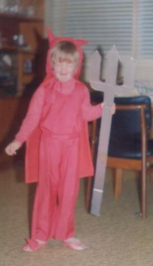
This is the first photo I have of myself. I think I am about 7 or 8, it was around the time I started wearing the satan suit that god started damning me at every turn. I guess this is around 1978.
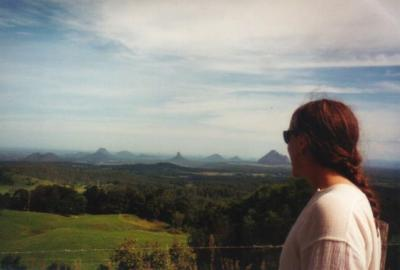
This is me looking out over the glasshouse mountains which lay outside of Brisbane where I live. Taken around 1997.
Me playing my guitar. Taken at my mothers house in Scarborough around 1998.
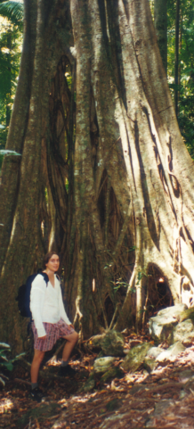
This is me and a tree. I love trees, when I die I would like to be buried beneath one. This was taken bushwalking with Irene around 1997.
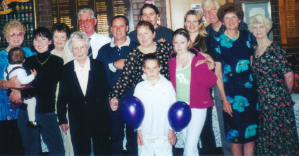
This is my fathers side of the family, the Green's, taken in 2002 at my Grandmothers 90th. From left to right, Aunt Ina, my cousin Susan and her little one, Aunt Carol, my Grandmother, Uncle Jim, my brother in law Harold, my sister Michelle, me up the back, my nephew Dylan down the front, my niece Emma, my sister Lindy, my father, my step mother Vivian, and Aunt Janette.
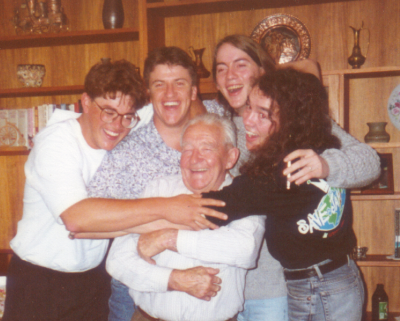
This is my grandfather on my mothers side. Surrounding him are all the grandsons, my cousins Nigel and Darren, me and my brother Warren. My grandfather passed away in 1993 which was another of the saddest moments of my life. I still have a plaque he gave me over my sink which says 'A blessed thing it is to have a friend, one human soul we can trust utterly, who knows the best and worst of us, and loves us despite all our faults'.
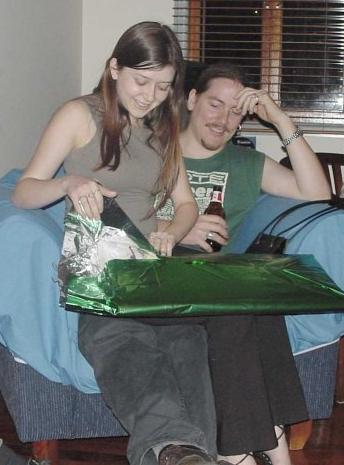
Caitlin is my most recent ex better half. We went out for about two and a half great years. If you look at it with a little imagination, it looks like I am wearing heels and Caitlin has legs twice the size of her body. This was taken in October 2003.
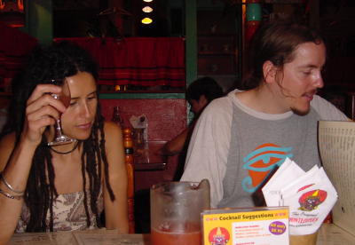
This is Irene, who was kind enough to share my life with me for 7 years or so from late 1995. She is one of the most wonderful people I have ever met, and she taught me how to be a better person. During our relationship I mellowed a lot and got vestiges of my sanity back. This photo is after she got her dreadlocks done. We are out to dinner with friends here in late 2002.
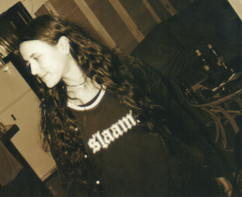
Another picture of Irene, this one before she had her hair dreaded, taken on a ship during a fierce storm. Well not really, the angle of the picture might have something to do with the alcohol bottles in the background though. This one is at my Mothers house in Scarborough in 1999 I think.
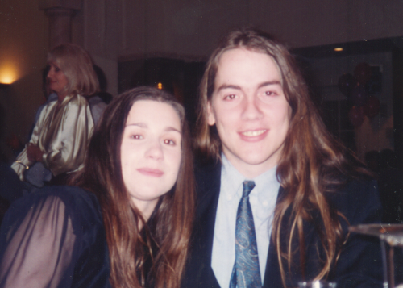
My first girlfriend Rochelle. We had a very passionate relationship starting around 1991 and lasting for a couple of years. My girlfriends since owe a lot to this relationship, for the maturity I gained from reflecting upon it. This photo is at a Batmitzvah in Caulfield around 1992.
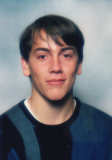
This is one of the rare photos I have of myself when I was younger. I think I am around 15 or 16 here, so that makes it taken in 1985 or 1986. I have no idea where or why it was taken, probably a school photo or something.
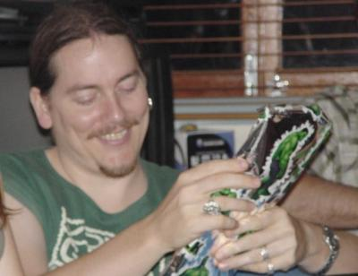
This is me at my bosses 40th in October 2003. I am playing pass the parcel. The prize ended up being a set of Incredible Hulk pencils, if I had known that, and that I wasn't going to win, I wouldn't have been so happy here.
Not enough??? See More photos or my online photos